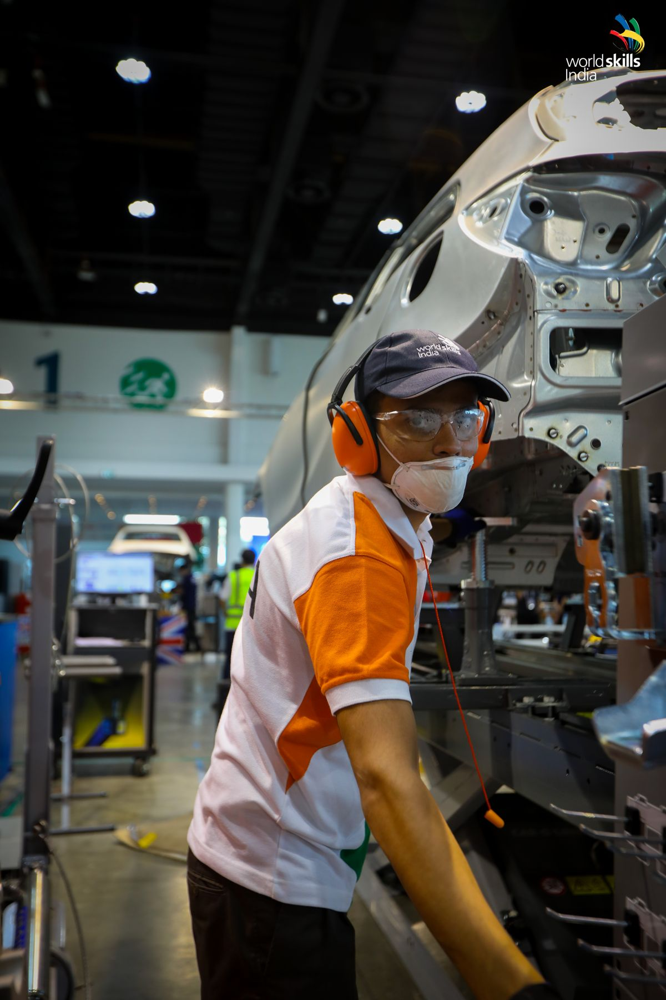
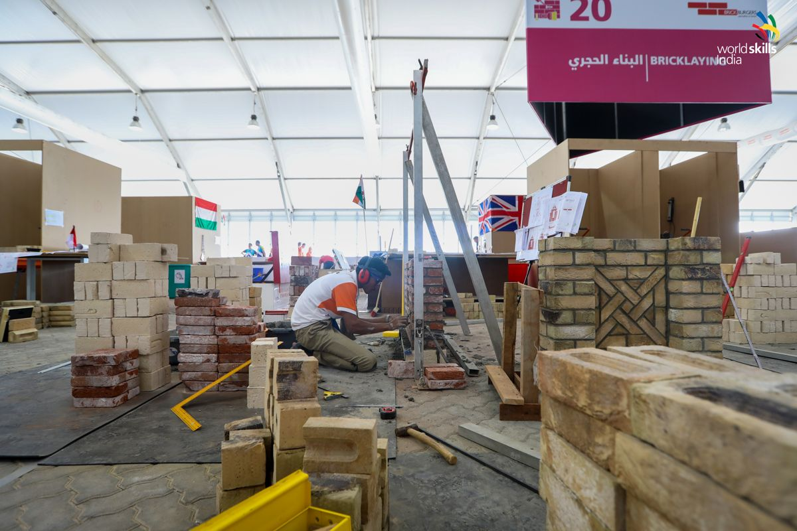
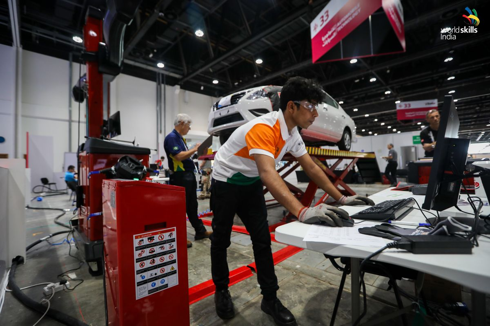
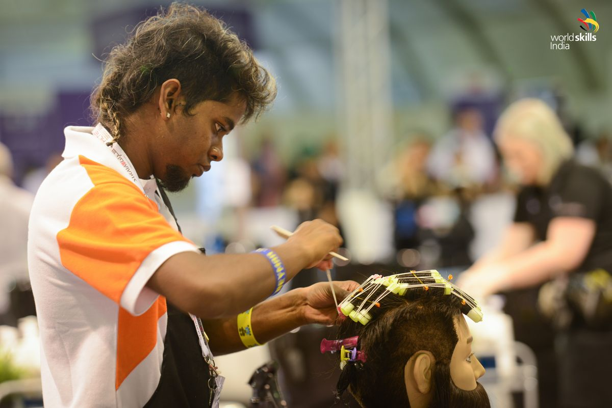
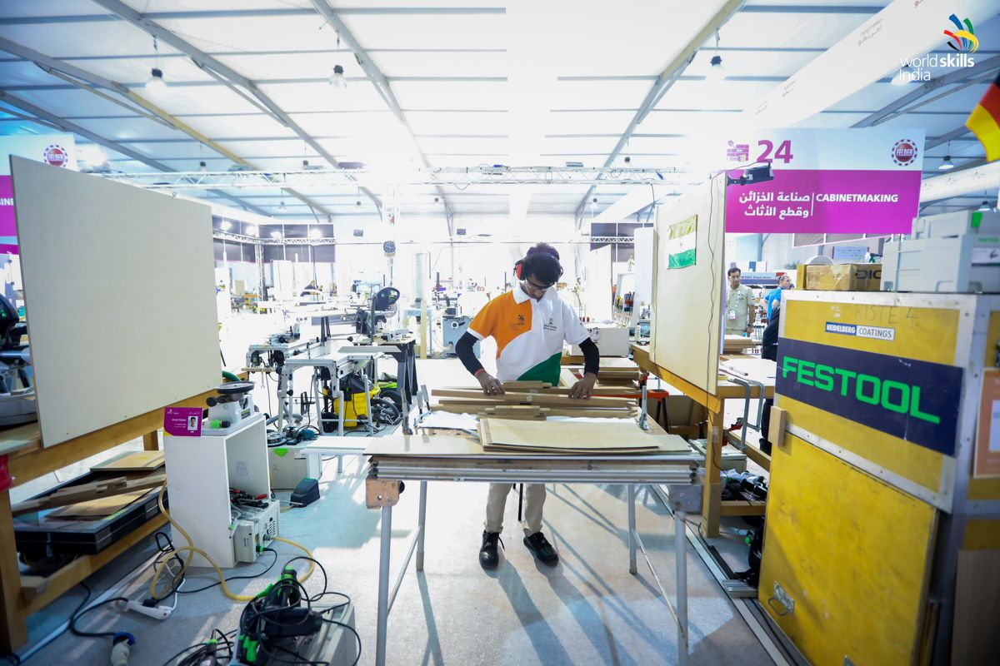
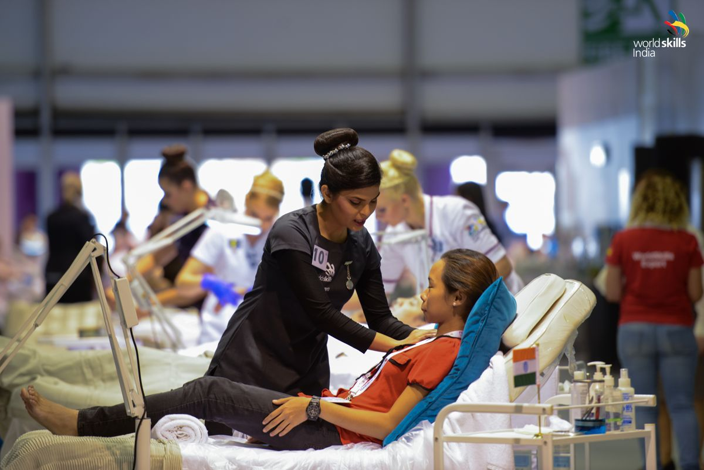

WorldSkills India is an initiative of the National Skill Development Corporation (NSDC) under the Ministry
of Skill Development and Entrepreneurship, Government of India. NSDC, through its WorldSkills India
initiative, has been leading the country's participation at WorldSkills International competitions since
2011.
About Competition
WorldSkills International is the largest skill competition in the world, organised once every two years in
one of the member countries. More than 1300 contestants below the age of 23, compete for gold, silver and
bronze medals, in over 50 skills. The competition is held over a span of four days.
Objectives
- Promulgate skills in society to motivate the youth to pursue vocational education.
- Champion skills and learning for work through local, regional, national and international skills
competitions
- Create partnership network comprising of government, industry, academic partners, VET institutions,
trade
associations and youth to promote skills
- Establish long-term association with WorldSkills International and other WorldSkills member countries
FAQs
-
Who can participate for Worldskills Competition 2019 ?
- Any skilled person born on or after 1st January 1999 could participate in any of the skills mentioned
below, with the exception to Aircraft Maintenance, Manufacturing Team Challenge and Mechatronics, where
the candidate should have been born on or after 1st January 1996.
-
What is the selection process and How to Participate?
- The potential competitors needs to register through an online portal ( state or national) to
participate in Indiaskills Competitions. The selection will be conducted by state government, sector
skill councils in partnership with academic & industry partners at district, zone, state level. The
selected state champions will be competing in regional competitions which will be organized by
Indiaskills in partnership with sector skill councils, corporate and academic partners. The regional
competition winners will be showcasing their skills at Indiaskills National competitions.
Time to Go
Competition will start on 9th March 2022, 10:00 AM
Gallery





